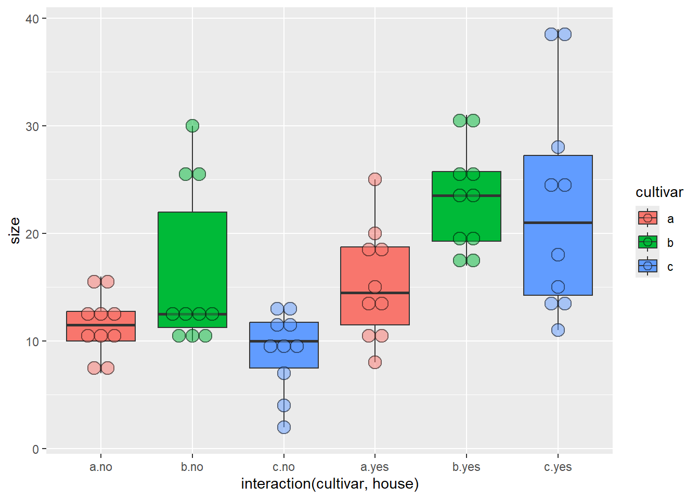

Two Sample t-test
data: size by cultivar
t = 2.0797, df = 18, p-value = 0.05212
alternative hypothesis: true difference in means between group a and group b is not equal to 0
95 percent confidence interval:
-0.03981237 7.83981237
sample estimates:
mean in group a mean in group b
15.3 11.4
# ANOVA ausführenaov(size ~ cultivar, data = blume)
Call:
aov(formula = size ~ cultivar, data = blume)
Terms:
cultivar Residuals
Sum of Squares 76.05 316.50
Deg. of Freedom 1 18
Residual standard error: 4.193249
Estimated effects may be unbalanced
summary( aov(size ~ cultivar, data = blume))
Df Sum Sq Mean Sq F value Pr(>F)
cultivar 1 76.0 76.05 4.325 0.0521 .
Residuals 18 316.5 17.58
---
Signif. codes: 0 '***' 0.001 '**' 0.01 '*' 0.05 '.' 0.1 ' ' 1
summary.lm( aov(size ~ cultivar, data = blume))
Call:
aov(formula = size ~ cultivar, data = blume)
Residuals:
Min 1Q Median 3Q Max
-7.300 -2.575 -0.350 2.925 9.700
Coefficients:
Estimate Std. Error t value Pr(>|t|)
(Intercept) 15.300 1.326 11.54 9.47e-10 ***
cultivarb -3.900 1.875 -2.08 0.0521 .
---
Signif. codes: 0 '***' 0.001 '**' 0.01 '*' 0.05 '.' 0.1 ' ' 1
Residual standard error: 4.193 on 18 degrees of freedom
Multiple R-squared: 0.1937, Adjusted R-squared: 0.1489
F-statistic: 4.325 on 1 and 18 DF, p-value: 0.05212
Echte ANOVA
# Ein weiterer Cultivar hinzufügenMesswerte_c <-c(30, 19, 31, 23, 18, 25, 26, 24, 17, 20)cultivar <-as.factor( c(rep("a", 10), rep("b", 10), rep("c", 10))) # Bezeichnug der Cultivare in der Tabelleblume2 <-data.frame("cultivar"= cultivar, "size"=c(Messwerte_a, Messwerte_b, Messwerte_c)) # Data frame erstellen# Daten als Boxplots anschauenggplot(blume2, aes(x = cultivar, y = size, fill = cultivar)) +geom_boxplot() +# Boxplotsgeom_dotplot(binaxis ="y", stackdir ="center", alpha =0.5) # Datenpunkte darstellen
# A tibble: 3 × 5
cultivar Mean SD Min Max
<fct> <dbl> <dbl> <dbl> <dbl>
1 a 15.3 5.21 8 25
2 b 11.4 2.84 7 16
3 c 23.3 4.85 17 31
# ANOVA durchführenaov1 <-aov(size ~ cultivar, data = blume2)aov1
Call:
aov(formula = size ~ cultivar, data = blume2)
Terms:
cultivar Residuals
Sum of Squares 736.0667 528.6000
Deg. of Freedom 2 27
Residual standard error: 4.424678
Estimated effects may be unbalanced
summary(aov1)
Df Sum Sq Mean Sq F value Pr(>F)
cultivar 2 736.1 368.0 18.8 7.68e-06 ***
Residuals 27 528.6 19.6
---
Signif. codes: 0 '***' 0.001 '**' 0.01 '*' 0.05 '.' 0.1 ' ' 1
summary.lm(aov1)
Call:
aov(formula = size ~ cultivar, data = blume2)
Residuals:
Min 1Q Median 3Q Max
-7.300 -3.375 -0.300 2.700 9.700
Coefficients:
Estimate Std. Error t value Pr(>|t|)
(Intercept) 15.300 1.399 10.935 2.02e-11 ***
cultivarb -3.900 1.979 -1.971 0.059065 .
cultivarc 8.000 1.979 4.043 0.000395 ***
---
Signif. codes: 0 '***' 0.001 '**' 0.01 '*' 0.05 '.' 0.1 ' ' 1
Residual standard error: 4.425 on 27 degrees of freedom
Multiple R-squared: 0.582, Adjusted R-squared: 0.5511
F-statistic: 18.8 on 2 and 27 DF, p-value: 7.683e-06
# Direkt als lineares Modelllm1 <-lm(size ~ cultivar, data = blume2)summary(lm1)
Call:
lm(formula = size ~ cultivar, data = blume2)
Residuals:
Min 1Q Median 3Q Max
-7.300 -3.375 -0.300 2.700 9.700
Coefficients:
Estimate Std. Error t value Pr(>|t|)
(Intercept) 15.300 1.399 10.935 2.02e-11 ***
cultivarb -3.900 1.979 -1.971 0.059065 .
cultivarc 8.000 1.979 4.043 0.000395 ***
---
Signif. codes: 0 '***' 0.001 '**' 0.01 '*' 0.05 '.' 0.1 ' ' 1
Residual standard error: 4.425 on 27 degrees of freedom
Multiple R-squared: 0.582, Adjusted R-squared: 0.5511
F-statistic: 18.8 on 2 and 27 DF, p-value: 7.683e-06
Tukeys Posthoc-Test
# Load librarylibrary("agricolae")# Sorten mit ihren Namen bezeichnen, damit keine Verwechslung mit den Post-Hoc-Labels entstehtblume2n <- blume2 blume2n$cultivar <-recode(blume2n$cultivar, "a"="Andro", "b"="Bulli", "c"="Chroma")# ANOVA und Posthoc-Test durchführenaov1 <-aov(size ~ cultivar, data = blume2n)posthoc <-HSD.test(aov1, "cultivar", console =TRUE)
Study: aov1 ~ "cultivar"
HSD Test for size
Mean Square Error: 19.57778
cultivar, means
size std r se Min Max Q25 Q50 Q75
Andro 15.3 5.207900 10 1.399206 8 25 11.50 14.5 18.75
Bulli 11.4 2.836273 10 1.399206 7 16 10.00 11.5 12.75
Chroma 23.3 4.854551 10 1.399206 17 31 19.25 23.5 25.75
Alpha: 0.05 ; DF Error: 27
Critical Value of Studentized Range: 3.506426
Minimun Significant Difference: 4.906213
Treatments with the same letter are not significantly different.
size groups
Chroma 23.3 a
Andro 15.3 b
Bulli 11.4 b
posthoc
$statistics
MSerror Df Mean CV MSD
19.57778 27 16.66667 26.54807 4.906213
$parameters
test name.t ntr StudentizedRange alpha
Tukey cultivar 3 3.506426 0.05
$means
size std r se Min Max Q25 Q50 Q75
Andro 15.3 5.207900 10 1.399206 8 25 11.50 14.5 18.75
Bulli 11.4 2.836273 10 1.399206 7 16 10.00 11.5 12.75
Chroma 23.3 4.854551 10 1.399206 17 31 19.25 23.5 25.75
$comparison
NULL
$groups
size groups
Chroma 23.3 a
Andro 15.3 b
Bulli 11.4 b
attr(,"class")
[1] "group"
# Darstellung der Ergebnisse mit Post-Hoc-Labels über Boxplots# Labels des Posthoc-Tests extrahierenlabels <- posthoc$groupslabels$cultivar <-rownames(labels)#In Plot darstellenggplot(blume2n, aes(x = cultivar, y = size, fill = cultivar)) +geom_boxplot() +geom_dotplot(binaxis ="y", stackdir ="center", alpha =0.5) +geom_text(data = labels, aes(x = cultivar, y =33, label = groups))
cultivar house size
1 a yes 20
2 a yes 19
3 a yes 25
4 a yes 10
5 a yes 8
6 a yes 15
7 a yes 13
8 a yes 18
9 a yes 11
10 a yes 14
11 a no 12
12 a no 15
13 a no 16
14 a no 7
15 a no 8
16 a no 10
17 a no 12
18 a no 11
19 a no 13
20 a no 10
21 b yes 30
22 b yes 19
23 b yes 31
24 b yes 23
25 b yes 18
26 b yes 25
27 b yes 26
28 b yes 24
29 b yes 17
30 b yes 20
31 b no 10
32 b no 12
33 b no 11
34 b no 13
35 b no 10
36 b no 25
37 b no 12
38 b no 30
39 b no 26
40 b no 13
41 c yes 15
42 c yes 13
43 c yes 18
44 c yes 11
45 c yes 14
46 c yes 25
47 c yes 39
48 c yes 38
49 c yes 28
50 c yes 24
51 c no 10
52 c no 12
53 c no 11
54 c no 13
55 c no 10
56 c no 9
57 c no 2
58 c no 4
59 c no 7
60 c no 13
# Daten mit Boxplots anschauen# Base-R-Variante wäre: boxplot(size ~ cultivar + house, data = blume3)ggplot(blume3, aes(x =interaction(cultivar, house), y = size, fill = cultivar)) +geom_boxplot() +geom_dotplot(binaxis ="y", stackdir ="center", alpha =0.5)

summary( aov(size ~ cultivar + house, data = blume3))
Df Sum Sq Mean Sq F value Pr(>F)
cultivar 2 417.1 208.5 5.005 0.01 *
house 1 992.3 992.3 23.815 9.19e-06 ***
Residuals 56 2333.2 41.7
---
Signif. codes: 0 '***' 0.001 '**' 0.01 '*' 0.05 '.' 0.1 ' ' 1
summary( aov(size ~ cultivar + house + cultivar:house, data = blume3))
Df Sum Sq Mean Sq F value Pr(>F)
cultivar 2 417.1 208.5 5.364 0.0075 **
house 1 992.3 992.3 25.520 5.33e-06 ***
cultivar:house 2 233.6 116.8 3.004 0.0579 .
Residuals 54 2099.6 38.9
---
Signif. codes: 0 '***' 0.001 '**' 0.01 '*' 0.05 '.' 0.1 ' ' 1
# Kurzschreibweise: "*" bedeutet, dass Interaktion zwischen cultivar und house eingeschlossen wirdsummary( aov(size ~ cultivar * house, data = blume3))
Df Sum Sq Mean Sq F value Pr(>F)
cultivar 2 417.1 208.5 5.364 0.0075 **
house 1 992.3 992.3 25.520 5.33e-06 ***
cultivar:house 2 233.6 116.8 3.004 0.0579 .
Residuals 54 2099.6 38.9
---
Signif. codes: 0 '***' 0.001 '**' 0.01 '*' 0.05 '.' 0.1 ' ' 1
summary.lm( aov(size ~ cultivar + house, data = blume3))
Call:
aov(formula = size ~ cultivar + house, data = blume3)
Residuals:
Min 1Q Median 3Q Max
-9.733 -4.696 -1.050 2.717 19.133
Coefficients:
Estimate Std. Error t value Pr(>|t|)
(Intercept) 9.283 1.667 5.570 7.52e-07 ***
cultivarb 6.400 2.041 3.135 0.00273 **
cultivarc 2.450 2.041 1.200 0.23509
houseyes 8.133 1.667 4.880 9.19e-06 ***
---
Signif. codes: 0 '***' 0.001 '**' 0.01 '*' 0.05 '.' 0.1 ' ' 1
Residual standard error: 6.455 on 56 degrees of freedom
Multiple R-squared: 0.3766, Adjusted R-squared: 0.3432
F-statistic: 11.28 on 3 and 56 DF, p-value: 6.848e-06
Nicht-parametrische Alternativen, wenn Modellannahmen der ANVOA massiv verletzt sind
# Nicht-parametrische Alternative zu t-Testwilcox.test(Messwerte_a, Messwerte_b)
Wilcoxon rank sum test with continuity correction
data: Messwerte_a and Messwerte_b
W = 73, p-value = 0.08789
alternative hypothesis: true location shift is not equal to 0
Kruskal-Wallis-Test bei starken Abweichungen von der Normalverteilung, aber ähnlichen Varianzen
# Zum Vergleich normale ANOVA noch malsummary(aov(size ~ cultivar, data = blume2))
Df Sum Sq Mean Sq F value Pr(>F)
cultivar 2 736.1 368.0 18.8 7.68e-06 ***
Residuals 27 528.6 19.6
---
Signif. codes: 0 '***' 0.001 '**' 0.01 '*' 0.05 '.' 0.1 ' ' 1
# Kruskal-Wallis-Testkruskal.test(size ~ cultivar, data = blume2)
Kruskal-Wallis rank sum test
data: size by cultivar
Kruskal-Wallis chi-squared = 16.686, df = 2, p-value = 0.0002381
# Load librarylibrary("FSA")# Post-Hoc mit korrigierten p-Werte nach Bejamini-HochbergdunnTest(size ~ cultivar, method ="bh", data = blume2)
Comparison Z P.unadj P.adj
1 a - b 1.526210 1.269575e-01 0.1269575490
2 a - c -2.518247 1.179407e-02 0.0176911039
3 b - c -4.044457 5.244459e-05 0.0001573338
Welch-Test bei erheblicher Heteroskedastizität, aber relative normal/symmetrisch verteilten Residuen
# Welch-Testoneway.test(size ~ cultivar, var.equal = F, data = blume2)
One-way analysis of means (not assuming equal variances)
data: size and cultivar
F = 21.642, num df = 2.000, denom df = 16.564, p-value = 2.397e-05